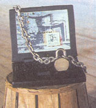

Is it Joe or Josephine Hacker, a 15-year old kid with too much time on his hands, or a determined hacker after personal information? Hard to say. But the security experts I've talked to place the culprits in three camps.
First are thrill-seeking kids who use readily available port scanners and packet-flooding programs to swamp a computer's network software and annoy users. These recreational hackers may just want to knock your kid off the Net - the Internet equivalent of the neighborhood bully - and beome first in line for a network game.
Next are system-crackers or script-kiddies who want to see what they can get away with, such as "defacing"a Web site. These folks exploit weaknesses in server software that has not been secured. Depending on their skills, they could steal your network password, disable your Web site's SSL protection (and muck with visitors to your Web site), crash your system, view and copy your network files, and more.
Finally, there are the serious and sophisticated cybercriminals who are after corporate or government information. Corporations are reluctant to reveal that their networks or e-commerce sites have been compromised for fear of driving away customers and watching their company's stock prices plummet. According to Jim Southworth, director of advanced network services and technologies at Concentric Network Corporation, you rarely hear about these hackers. "Fortunately, their attempts to infiltrate banking, credit card and government sites, while fairly common, are seldom successful," says Southworth.
Your PC may not be as big a target as a commercial site, but even a single attack can be devastatingly personal, no matter who you are. For example, there is an infamous program called BackOrifice, used by sophisticated hackers and others, that can tap into and record all of the activity on your PC, and even take control of it - silently.
The problem of Internet security is serious enough that President Clinton released a National Plan for Information Systems Protection that assesses the vulnerability of systems to cyberterrorism and makes recommendations for security measures. The plan would also cover ISPs, and, hence, home and small-business users. (Visit www.cdt.org/policy/terrorism/fidnet/toc.shtml for a draft of the plan.)
Your e-mail address - and the sites and Web pages you visit - are also targets for Internet marketing types who want to push ads for products they think you'll want to buy. Almost everyone who has an e-mail account has received junk-mail pitches, the volume of which can be anything from an annoyance to an actual strain on productivity.
|
 |
|
|